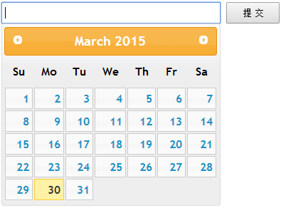

Spring MVC @InitBinder
来源：原创 发布时间：2015-03-30 归档：springmvc
开发环境 ：
JDK 7
Maven 3
Tomcat 7
Spring 4.1.5
Eclipse Luna
@InitBinder 注解允许你在 Controller 中配置 命令/表单 属性和所有请求参数的绑定方式, 并且不能有返回值。
一般而言, Http GET 请求参数绑定到的对象称为命令对象, Http POST 请求参数绑定到的对象称为表单对象。命令/表单 属性则是指这类对象的属性。
示例代码片段 1 ( 自定义日期类型数据绑定 )
一般而言, Http GET 请求参数绑定到的对象称为命令对象, Http POST 请求参数绑定到的对象称为表单对象。命令/表单 属性则是指这类对象的属性。
@Controller
@RequestMapping("/calendar")
public class CalendarController {
/**
* 修改日期
*
* @param model
* ModelMap
* @param date
* 日期参数
* @return
*/
@RequestMapping(value = "/modify", method = GET)
public String modify(ModelMap model, Date date) {
DateFormat dateFormat = new SimpleDateFormat("yyyy年MM月dd日");
model.addAttribute("datetime", dateFormat.format(date));
return INDEX_PAGE;
}
}
GET /calendar/modify?date=2015-03-30 --> 400 Error
这是由于请求参数不是标准的 UTC 时间格式, 修改为标准的 UTC 格式即可 /calendar/modify?date=Mon Mar 30 09:56:50 CST 2015
自定义日期 java.util.Date 类型的数据绑定
这是由于请求参数不是标准的 UTC 时间格式, 修改为标准的 UTC 格式即可 /calendar/modify?date=Mon Mar 30 09:56:50 CST 2015
@Controller
@RequestMapping("/calendar")
public class CalendarController {
@InitBinder
public void dateBinder(WebDataBinder binder) {
DateFormat dateFormat = new SimpleDateFormat("yyyy-MM-dd");
binder.registerCustomEditor(Date.class, new CustomDateEditor(dateFormat, false));
}
/**
* 修改日期
*
* @param model
* ModelMap
* @param date
* 日期参数
* @return
*/
@RequestMapping(value = "/modify", method = GET)
public String modify(ModelMap model, Date date) {
DateFormat dateFormat = new SimpleDateFormat("yyyy年MM月dd日 HH:mm:ss");
model.addAttribute("datetime", dateFormat.format(date));
return INDEX_PAGE;
}
}

GET /calendar/modify?date=2015-03-30
spring mvc 注册了许多默认的属性编辑器来支持处理方法参数数据类型的自动转换
/**
* 位置：org.springframework.beans.PropertyEditorRegistrySupport
*
* Actually register the default editors for this registry instance.
*/
private void createDefaultEditors() {
this.defaultEditors = new HashMap<Class<?>, PropertyEditor>(64);
// Simple editors, without parameterization capabilities.
// The JDK does not contain a default editor for any of these target types.
this.defaultEditors.put(Charset.class, new CharsetEditor());
this.defaultEditors.put(Class.class, new ClassEditor());
this.defaultEditors.put(Class[].class, new ClassArrayEditor());
this.defaultEditors.put(Currency.class, new CurrencyEditor());
this.defaultEditors.put(File.class, new FileEditor());
this.defaultEditors.put(InputStream.class, new InputStreamEditor());
this.defaultEditors.put(InputSource.class, new InputSourceEditor());
this.defaultEditors.put(Locale.class, new LocaleEditor());
this.defaultEditors.put(Pattern.class, new PatternEditor());
this.defaultEditors.put(Properties.class, new PropertiesEditor());
this.defaultEditors.put(Resource[].class, new ResourceArrayPropertyEditor());
this.defaultEditors.put(TimeZone.class, new TimeZoneEditor());
this.defaultEditors.put(URI.class, new URIEditor());
this.defaultEditors.put(URL.class, new URLEditor());
this.defaultEditors.put(UUID.class, new UUIDEditor());
if (zoneIdClass != null) {
this.defaultEditors.put(zoneIdClass, new ZoneIdEditor());
}
// Default instances of collection editors.
// Can be overridden by registering custom instances of those as custom editors.
this.defaultEditors.put(Collection.class, new CustomCollectionEditor(Collection.class));
this.defaultEditors.put(Set.class, new CustomCollectionEditor(Set.class));
this.defaultEditors.put(SortedSet.class, new CustomCollectionEditor(SortedSet.class));
this.defaultEditors.put(List.class, new CustomCollectionEditor(List.class));
this.defaultEditors.put(SortedMap.class, new CustomMapEditor(SortedMap.class));
// Default editors for primitive arrays.
this.defaultEditors.put(byte[].class, new ByteArrayPropertyEditor());
this.defaultEditors.put(char[].class, new CharArrayPropertyEditor());
// The JDK does not contain a default editor for char!
this.defaultEditors.put(char.class, new CharacterEditor(false));
this.defaultEditors.put(Character.class, new CharacterEditor(true));
// Spring's CustomBooleanEditor accepts more flag values than the JDK's default editor.
this.defaultEditors.put(boolean.class, new CustomBooleanEditor(false));
this.defaultEditors.put(Boolean.class, new CustomBooleanEditor(true));
// The JDK does not contain default editors for number wrapper types!
// Override JDK primitive number editors with our own CustomNumberEditor.
this.defaultEditors.put(byte.class, new CustomNumberEditor(Byte.class, false));
this.defaultEditors.put(Byte.class, new CustomNumberEditor(Byte.class, true));
this.defaultEditors.put(short.class, new CustomNumberEditor(Short.class, false));
this.defaultEditors.put(Short.class, new CustomNumberEditor(Short.class, true));
this.defaultEditors.put(int.class, new CustomNumberEditor(Integer.class, false));
this.defaultEditors.put(Integer.class, new CustomNumberEditor(Integer.class, true));
this.defaultEditors.put(long.class, new CustomNumberEditor(Long.class, false));
this.defaultEditors.put(Long.class, new CustomNumberEditor(Long.class, true));
this.defaultEditors.put(float.class, new CustomNumberEditor(Float.class, false));
this.defaultEditors.put(Float.class, new CustomNumberEditor(Float.class, true));
this.defaultEditors.put(double.class, new CustomNumberEditor(Double.class, false));
this.defaultEditors.put(Double.class, new CustomNumberEditor(Double.class, true));
this.defaultEditors.put(BigDecimal.class, new CustomNumberEditor(BigDecimal.class, true));
this.defaultEditors.put(BigInteger.class, new CustomNumberEditor(BigInteger.class, true));
// Only register config value editors if explicitly requested.
if (this.configValueEditorsActive) {
StringArrayPropertyEditor sae = new StringArrayPropertyEditor();
this.defaultEditors.put(String[].class, sae);
this.defaultEditors.put(short[].class, sae);
this.defaultEditors.put(int[].class, sae);
this.defaultEditors.put(long[].class, sae);
}
}
示例代码片段 2 ( 布尔类型数据绑定 )
/**
* 位置：org.springframework.beans.propertyeditors.CustomBooleanEditor
*/
public class CustomBooleanEditor extends PropertyEditorSupport {
public static final String VALUE_TRUE = "true";
public static final String VALUE_FALSE = "false";
public static final String VALUE_ON = "on";
public static final String VALUE_OFF = "off";
public static final String VALUE_YES = "yes";
public static final String VALUE_NO = "no";
public static final String VALUE_1 = "1";
public static final String VALUE_0 = "0";
. . . . . .
}
@Controller
@RequestMapping("/bool")
public class BoolController {
/**
* 布尔类型数据绑定
*
* @param model
* ModelMap
* @param auto
* true/false | yes/no | on/off | 1/0
* @return
*/
@RequestMapping(value = "/autoUpdate", method = GET)
public String autoUpdate(ModelMap model, Boolean auto) {
model.addAttribute("autoUpdate", auto);
return INDEX_PAGE;
}
}
GET /bool/autoUpdate?auto=no
示例代码片段 3 ( 数组类型数据绑定 )
/**
* 位置：org.springframework.beans.propertyeditors.StringArrayPropertyEditor
*/
public class StringArrayPropertyEditor extends PropertyEditorSupport {
/**
* Default separator for splitting a String: a comma (",")
*/
public static final String DEFAULT_SEPARATOR = ",";
. . . . . .
}
@Controller
@RequestMapping("/array")
public class ArrayController {
@RequestMapping(value = "/int", method = GET)
public String handleIntArray(ModelMap model, int[] data) {
model.put("data", "int : " + Arrays.toString(data));
return INDEX_PAGE;
}
}
GET /array/int?data=1,3,5,7,9
示例代码片段 4 ( 集合类型数据绑定 )
@Controller
@RequestMapping("/collection")
public class CollectionController {
/**
*
* @param model
* ModelMap
* @param persons
* 参数名称需与命令/表单对象封装的集合属性名称一致
* @return
*/
@RequestMapping(value = "/person", method = GET)
public String handlePersonCollection(ModelMap model, PersonList persons) {
model.put("data", "person : " + persons);
return INDEX_PAGE;
}
public static class PersonList {
private List<Person> persons;
public List<Person> getPersons() {
return persons;
}
public void setPersons(List<Person> persons) {
this.persons = persons;
}
@Override
public String toString() {
return persons.toString();
}
}
public static class Person {
private String name;
public Person() {
}
public Person(String name) {
this.name = name;
}
public String getName() {
return name;
}
public void setName(String name) {
this.name = name;
}
@Override
public String toString() {
return name;
}
}
}
GET /collection/person?persons[0].name=lychie&persons[1].name=fan
示例代码片段 5 ( 命令/表单对象数据绑定 )
@Controller
@RequestMapping("/object")
public class ObjectController {
/**
* 命令对象数据绑定
*/
@RequestMapping(value = "/pojo", method = GET)
public String handlePojo(ModelMap model, User user, Person person) {
model.put("user", "user : " + user);
model.put("person", "person : " + person);
return INDEX_PAGE;
}
public static class User {
private String name;
public String getName() {
return name;
}
public void setName(String name) {
this.name = name;
}
@Override
public String toString() {
return name;
}
}
public static class Person {
private String name;
public String getName() {
return name;
}
public void setName(String name) {
this.name = name;
}
@Override
public String toString() {
return name;
}
}
}
GET /object/pojo?name=lychie --> user : lychie, person : lychie
如遇到两个或以上的命令/表单对象含有相同的属性, 则在数据绑定的时候, 这些对象属性将绑定到相同的参数值。若要区分开来, 可以通过定义不同的前缀:
如遇到两个或以上的命令/表单对象含有相同的属性, 则在数据绑定的时候, 这些对象属性将绑定到相同的参数值。若要区分开来, 可以通过定义不同的前缀:
@Controller
@RequestMapping("/object")
public class ObjectController {
/**
* 命令对象 user 前缀绑定
*/
@InitBinder("user")
public void userPrefixBinder(WebDataBinder binder) {
binder.setFieldDefaultPrefix("user.");
}
/**
* 命令对象 person 前缀绑定
*/
@InitBinder("person")
public void personPrefixBinder(WebDataBinder binder) {
binder.setFieldDefaultPrefix("person.");
}
/**
* 命令对象数据绑定
*/
@RequestMapping(value = "/pojo", method = GET)
public String handlePojo(ModelMap model, User user, Person person) {
model.put("user", "user : " + user);
model.put("person", "person : " + person);
return INDEX_PAGE;
}
}
GET /object/pojo?user.name=lychie&person.name=fan --> user : lychie, person : fan
这里的 @InitBinder 标注用了 value 注解, 若 value 注解缺省, 则绑定规则在当前 Controller 内有效。若标注 value 注解, 则只有当命令/表单属性和所有的请求参数名称与该 value 注解标注的名称一致时, 绑定才起效。
这里的 @InitBinder 标注用了 value 注解, 若 value 注解缺省, 则绑定规则在当前 Controller 内有效。若标注 value 注解, 则只有当命令/表单属性和所有的请求参数名称与该 value 注解标注的名称一致时, 绑定才起效。
示例代码下载